%%{init: {'theme': 'dark', 'themeVariables': { 'darkMode': true, 'background': 'transparent' }}}%%
graph LR
A["Image"] --> B["Flatten<br>(40k-D)"]
B --> C["z-score"]
C --> D["PCA<br>(50-D)"]
D --> E["K-means / GMM"]
style E fill:#e7ad52,color:#000
Machine Learning in Materials Processing & Characterization
Unit 5: Unsupervised Methods for Materials — Clustering and Autoencoders
Prof. Dr. Philipp Pelz
FAU Erlangen-Nürnberg


§0 · Frame
03. Learning Outcomes
By the end of 90 minutes, you can:
- Apply K-means and GMM to materials descriptors and choose \(k\) defensibly (elbow / silhouette / BIC).
- Cluster CNN embeddings for unsupervised phase discovery on micrographs.
- Cluster hyperspectral datacubes (EELS / EDS / XRF) into spatial phase maps.
- Build a convolutional autoencoder for denoising, compression, and label-efficient regression.
- Deploy AE reconstruction error as an anomaly score with a defensible threshold.
- Articulate what the AE bottleneck \(z\) is — anticipating the W9 latent-space view and W11 generative use.
§A · Classical Clustering on Materials Descriptors
05. K-means Recap (1/2): Lloyd’s Iteration
Objective
\[\min_{\{\mu_k\}, \{c_i\}} \sum_{i=1}^{N} \|\mathbf{x}_i - \mu_{c_i}\|_2^2\]
- \(c_i \in \{1, \dots, k\}\): hard assignment of point \(i\).
- \(\mu_k\): centroid of cluster \(k\).
Lloyd’s iteration — assignment step
- For each point \(\mathbf{x}_i\), assign: \[c_i \leftarrow \arg\min_k \|\mathbf{x}_i - \mu_k\|_2^2\]
- Each point goes to its nearest centroid (Bishop 2006).
06. K-means Recap (2/2): Update and Initialisation
Update step
- For each cluster \(k\): \[\mu_k \leftarrow \frac{1}{|C_k|} \sum_{i \in C_k} \mathbf{x}_i\]
- The new centroid is the mean of its assigned points.
- Iterate until assignments stop changing.
Convergence and initialisation
- Converges to a local optimum — not global.
- Sensitive to initialisation; restart from many random seeds.
- k-means++: spread initial centroids by sampling proportional to squared distance from already-chosen centroids.
Practical default in
sklearn:KMeans(init='k-means++', n_init=10). Take the best run by total inertia.
08. GMM as Soft K-means
Generative model
\[p(\mathbf{x}) = \sum_{k=1}^{K} \pi_k \, \mathcal{N}(\mathbf{x} \mid \mu_k, \Sigma_k)\]
- Each point is drawn from one of \(K\) Gaussians.
- \(\pi_k \geq 0\), \(\sum_k \pi_k = 1\): mixing weights.
- \(\Sigma_k\): per-component covariance (full / diagonal / spherical).
Posterior responsibilities
\[\gamma_{ik} = \frac{\pi_k \, \mathcal{N}(\mathbf{x}_i \mid \mu_k, \Sigma_k)}{\sum_{j} \pi_j \, \mathcal{N}(\mathbf{x}_i \mid \mu_j, \Sigma_j)}\]
- Each point has a soft posterior over clusters.
- \(\sum_k \gamma_{ik} = 1\); mixed-membership is allowed (Bishop 2006).
09. EM for GMM
E-step (responsibilities)
\[\gamma_{ik} \leftarrow \frac{\pi_k \, \mathcal{N}(\mathbf{x}_i \mid \mu_k, \Sigma_k)}{\sum_j \pi_j \, \mathcal{N}(\mathbf{x}_i \mid \mu_j, \Sigma_j)}\]
- Compute posterior cluster membership at current parameters.
M-step (parameter updates)
\[N_k = \sum_i \gamma_{ik}, \quad \pi_k \leftarrow \tfrac{N_k}{N}\]
\[\mu_k \leftarrow \tfrac{1}{N_k} \sum_i \gamma_{ik} \mathbf{x}_i\]
\[\Sigma_k \leftarrow \tfrac{1}{N_k} \sum_i \gamma_{ik} (\mathbf{x}_i - \mu_k)(\mathbf{x}_i - \mu_k)^\top\]
10. Case Study — Composition Clustering with ESTM (1/4)
Dataset
- ESTM (Na and Chang 2022): 5 205 experimental observations across 880 thermoelectric compounds.
- Each row = (formula, temperature \(T\), Seebeck \(S\), conductivity \(\sigma\), thermal conductivity \(\kappa\), power factor \(\mathrm{PF}\), figure of merit \(\mathrm{ZT}\)).
- No phase labels, no class labels — just composition + physics measurements.
- Goal: discover the families of thermoelectric materials, then rank families by ZT.
The new question: what is the feature vector for a compound?
- Grain morphology (slide 7) had three obvious geometric numbers per object.
- A compound is a string —
Bi₂Te₃,PbTe,Yb₀.₃Co₄Sb₁₂. Not yet a vector. - Two standard choices, contrasted on the right.
Two composition featurizations
- Element fractions. 118-D one-hot-like vector + \(T\) → 119-D. Sparse: most rows touch 2–4 elements out of 118.
- Magpie descriptors (Ward et al. 2016). 132 physics-aware statistics over the present elements (mean atomic mass, mean electronegativity, mean valence-shell occupancy, mean atomic radius, …) + \(T\) → 133-D. Dense.
- Same K-means, same standardisation, same data — only the feature map changes. That is the experiment.
- Reproducible at
notebooks/MLPC/week05_clustering_estm.qmd.
11. ESTM — Picking K Without a Clean Elbow (2/4)
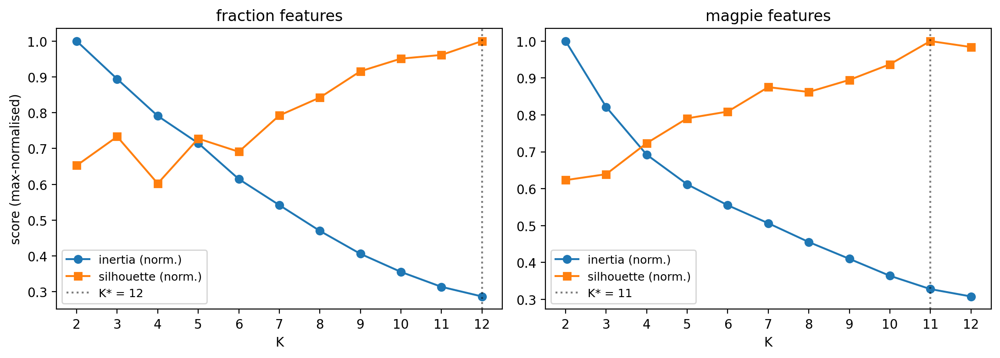
When silhouette is monotonic and inertia has no elbow, the data lacks discrete groups in this representation. Pick \(K\) honestly, then validate clusters by what they contain (next two slides).
What the diagnostics say
- Silhouette never peaks — it just keeps climbing as \(K\) grows.
- Inertia falls smoothly, no clean elbow either.
- Argmax silhouette: \(K^* = 12\) (fractions), \(K^* = 11\) (Magpie).
- These are working hypotheses, not “the answer”.
Two more numbers worth saying aloud
- Fraction-feature PCA-10 captures 29.5 % of variance.
- Magpie-feature PCA-10 captures 77.6 %.
- First quantitative hint that featurization changes the geometry of the data, not just its labels.
11a. ESTM — Featurization Shapes the Cluster Map (3/4)
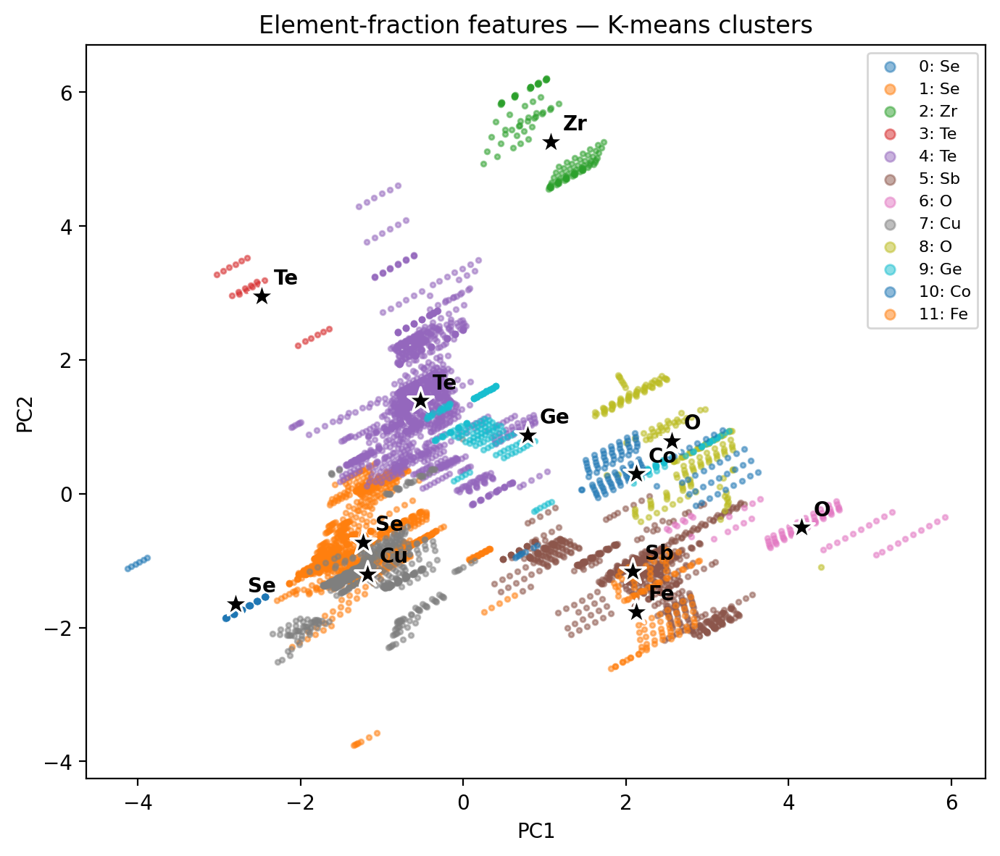
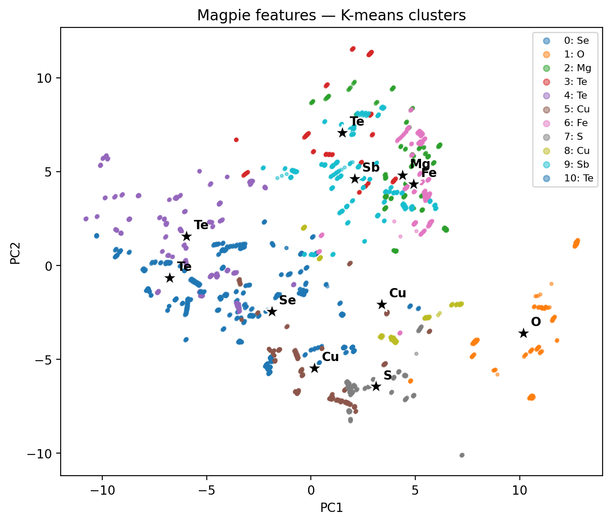
Same 5 205 compounds, same K-means, two different feature maps → two different cluster geometries. Featurization design has bigger impact than the choice of \(K\).
11b. ESTM — Clusters Concentrate ZT in Specific T Windows (4/4)
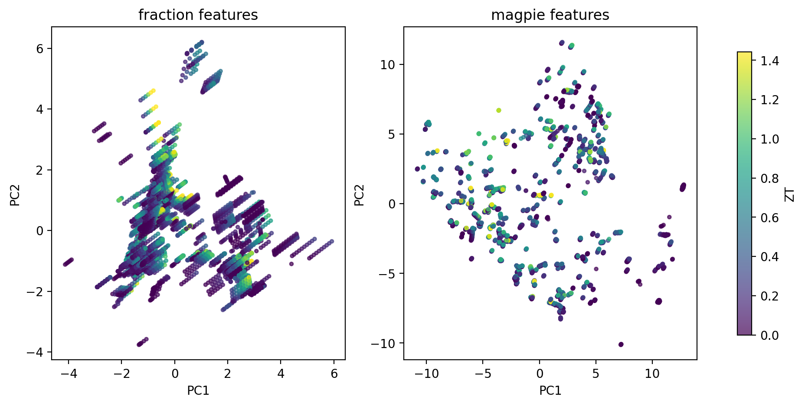
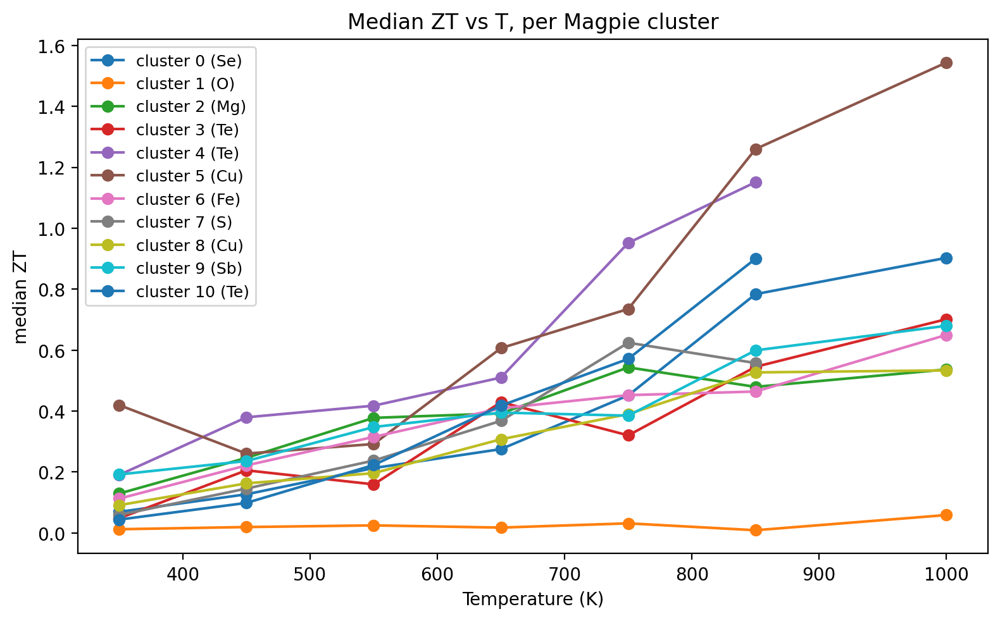
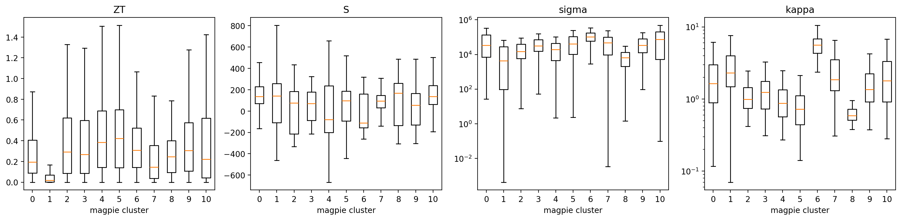
Discovery signal
- A handful of Magpie clusters carry >2× the median ZT of the full dataset.
- Cluster T-profiles separate low-\(T\) chalcogenides from high-\(T\) skutterudites / half-Heuslers.
- Cluster \(\equiv\) operating window: a shortlist for synthesis in a target \(T\) range.
- One step short of Na and Chang (2022)’s SIMD descriptor, which learns the cluster-aware projection — preview of Unit 9 latent spaces.
12. When Clustering Is the Wrong Tool
Continuous spectra
- Microstructures often vary smoothly: grain size, texture sharpness, defect density.
- Forcing \(k\) partitions onto a continuum gives spurious boundaries.
- Better: use a continuous representation (PCA, AE bottleneck) and visualise, not partition.
Multi-scale heterogeneity
- A single sample contains structure at nm, µm, and mm scales.
- One clustering can capture only one scale.
- Better: cluster at each scale separately or use hierarchical methods.
Rule of thumb: if your silhouette score is \(< 0.25\) regardless of \(k\), clustering is not the right tool. The data lacks discrete groups.
§B · Clustering CNN-Encoded Representations
13. The Labels-Are-Expensive Problem Revisited
The setup
- 50 000 SEM frames from an automated session.
- 0 phase labels (operator was busy).
- Yesterday’s question: “What’s in there?”
- A pretrained CNN sits on the lab GPU.
Today’s answer
- Freeze the CNN. Pull embeddings. Cluster.
- No retraining, no labels, no bespoke architecture.
- The CNN’s pretrained features serve as general-purpose image descriptors (Sandfeld et al. 2024).
14. CNN as Frozen Feature Extractor
The recipe
- Take a CNN pretrained on natural images (ResNet, EfficientNet, ConvNeXt) or on materials data (if available).
- Remove the classification head.
- For each image \(x\), output the penultimate-layer activations \(\phi(x) \in \mathbb{R}^d\).
- \(d \in \{256, 512, 1024, 2048\}\) depending on backbone.
Why “frozen”?
- No backpropagation, no labels, no fine-tuning.
- \(\phi\) is treated as a fixed function: image → feature vector.
- 5–10 minutes for \(10^4\) images on a single GPU.
- Same recipe as transfer learning (Unit 6), but without the supervised second stage.
15. Embeddings as a New Feature Space
The transformation
- Image: \(W \times H \times 3\) pixels — millions of dimensions.
- Embedding: \(\mathbb{R}^d\) — hundreds to a few thousand.
- Each embedding axis encodes a learned visual concept (texture, orientation, contrast structure).
- Pairwise distance in embedding space ≈ semantic distance.
Practical preprocessing
- L2-normalise embeddings: \(\phi(x) \to \phi(x) / \|\phi(x)\|_2\).
- Optionally PCA-reduce to \(\sim 50\)–\(100\) dims.
- Standardise per-axis (z-score) if not L2-normalised.
- Then K-means / GMM as in §A.
16. K-means / GMM on Embeddings
Pipeline
- \(\phi(x_i) \in \mathbb{R}^d\) for \(i = 1, \dots, N\).
- L2-normalise; PCA to \(d' \in [50, 100]\).
- Run K-means or GMM with \(k\) chosen by silhouette + BIC.
- Inspect cluster exemplars — pick \(k\) representative images per cluster.
Reading the result
- Each cluster = visually coherent group of micrographs.
- Cluster centroid: a prototype feature vector. The nearest images to it are “purest” examples.
- Outlier images: those far from any centroid. Often the most informative for QA.
17. Cluster Quality Metrics — Internal
No labels needed (used to pick \(k\))
- Silhouette \(\bar{s} \in [-1, 1]\). Per-point \(s(i) = (b_i - a_i)/\max(a_i, b_i)\) with \(a_i\) = mean intra-cluster distance, \(b_i\) = mean distance to the nearest other cluster. Average over \(i\). Rule of thumb: \(\bar{s} \gtrsim 0.5\) strong, \(0.25\)–\(0.5\) weak, \(< 0.25\) probably not clusterable.
- BIC (GMM). \(\mathrm{BIC} = -2 \log L + p \log N\). Lower = better; penalises model complexity. Pick the \(k\) at the BIC elbow.
Used at slides 7, 12, 17 to choose \(k\) when no ground truth exists.
18. Cluster Quality Metrics — External
Require labels (used to score against truth)
- ARI — adjusted Rand index. Counts agreeing/disagreeing pairs of points across (cluster, true-class) partitions, then subtracts the chance baseline. Range \([-1, 1]\): 0 = chance, 1 = perfect, negative = worse than random.
- NMI — normalised mutual information: \(\mathrm{NMI}(C, Y) = I(C;Y)/\sqrt{H(C)\,H(Y)}\). Range \([0, 1]\): 0 = independent partitions, 1 = identical partitions.
- Both are permutation-invariant: relabelling clusters \(\{0,1,2\} \to \{2,0,1\}\) leaves the score unchanged.
Used on slides 19–21 to score the NEU-DET case study against ground truth.
19. Case Study — NEU-DET Steel Defects (1/3)
Dataset
- NEU-DET (Song and Yan 2013): 1800 grayscale 200×200 micrographs of hot-rolled steel surfaces.
- Six defect classes, 300 frames each: crazing, inclusion, patches, pitted_surface, rolled-in_scale, scratches.
- Labels are used only for evaluation — clustering sees pixels.
Two feature pipelines, two algorithms
- A raw pixels (40 000-D) → z-score → PCA(50).
- B frozen ResNet18 (ImageNet) → 512-D embedding → z-score.
- Run both K-means and GMM with \(K = 6\) on each feature set.
- Score against ground truth with ARI and NMI; inspect with t-SNE and contingency tables.
- Notebook:
notebooks/MLPC/week05_clustering_neu_det.qmd.
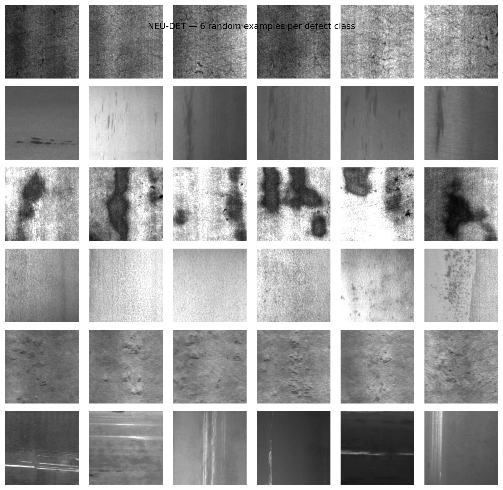
20. Case Study — NEU-DET Feature Pipelines (2/3)
Pipeline A: Raw Pixels + PCA
- Flattening: Treats the 200×200 image as a flat 40,000-D vector, discarding all spatial relationships.
- PCA: Reduces dimensionality to 50, capturing the directions of maximum variance (mostly global brightness and large contrast shifts).
- Limitation: Euclidean distance in raw pixel space is highly sensitive to illumination and translation.
Pipeline B: ResNet18 Embeddings
- Deep CNN: Passes the image through a frozen ResNet18 (pretrained on ImageNet), preserving spatial locality via convolutions.
- Pooling: Extracts a 512-D feature vector from the final global average pooling layer.
- Advantage: Leverages hierarchical, translation-invariant features
Pipeline A Architecture
Pipeline B Architecture
%%{init: {'theme': 'dark', 'themeVariables': { 'darkMode': true, 'background': 'transparent' }}}%%
graph LR
A["Image"] --> B["ResNet18<br>(Frozen)"]
B --> C["Global Pool<br>(512-D)"]
C --> D["z-score"]
D --> E["K-means / GMM"]
style B fill:#4a9eff,color:#fff
style E fill:#e7ad52,color:#000
21. Case Study — NEU-DET Results (3/3)
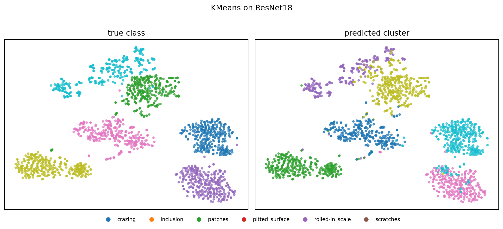

What the numbers say
- Representation beats algorithm. Swapping raw pixels for ResNet18 embeddings raises ARI from 0.12 → 0.81 for K-means — a \(\sim 7\times\) jump with the same clustering code.
- GMM ≈ K-means once features are good. On ResNet18, GMM (ARI 0.83) is within noise of K-means (0.81). The features carry the signal; soft vs hard assignment is a second-order knob.
- Some classes are easy, others not.
The encoder did the work. We will revisit this on slide 23 (caveat); domain-pretrained encoders are picked up again in Unit 9 (contrastive learning).
22. Outlier Detection via Singleton Clusters
Setup
- Run K-means with a generous \(k\) (say, \(k = 10\) for 10 000 frames).
- Most clusters: hundreds to thousands of points each.
- Some clusters: single-digit membership.
- Singleton / tiny clusters = candidate outliers.
Why this works
- A truly anomalous frame is far from any nominal centroid.
- K-means accommodates it by placing a centroid at it — a cluster of one.
- Inspecting the 10–20 smallest clusters surfaces \(\sim\)all dataset-scale anomalies.
- Cost: one human-eyeball pass on \(\lesssim 100\) frames.
23. Caveat: Cluster Meaning ≤ Encoder Quality
The trap
- ImageNet-pretrained CNNs were optimised to discriminate cats from dogs, not austenite from martensite.
- Some materials concepts are visible to ImageNet features (shape, texture, contrast) — ferrite vs pearlite works.
- Some are not (subtle phase contrast, EBSD orientation cues) — the CNN simply doesn’t have features for them.
Diagnostic
- Inspect cluster exemplars. If clusters split on imaging conditions (mag, brightness, focus) rather than phases, the encoder is missing the relevant features.
- Remedy: domain-pretrained encoder (Unit 9), or supervised fine-tuning (Unit 6), or hand-crafted features (§A).
§C · Hyperspectral Clustering
24. Hyperspectral Data in Materials
The datacube
- Per-pixel spectrum instead of per-pixel intensity.
- Shape: \(H \times W \times C\), with \(C \in \{64, 256, 2048, \dots\}\) spectral channels.
- Modalities: EELS (electron energy loss), EDS / EDXS (X-ray emission), XRF (X-ray fluorescence), Raman/IR mapping.
Information content
- Each pixel carries chemistry, bonding, oxidation state, phonons.
- Spatial \((x, y)\) tells where; spectrum tells what.
- Exam scale: a \(512 \times 512\) EELS spectrum image is \(\sim 130\,000\) spectra, often \(\geq 1000\) channels each.
25. Reframe as Clustering
The trick
- Flatten \((x, y) \to i\): the datacube becomes an \(N \times C\) matrix of \(N = H W\) spectra.
- Each row is a feature vector \(\mathbf{s}_i \in \mathbb{R}^C\).
- This is now an §A-style clustering problem with \(C\)-dimensional features.
- Run K-means or GMM as usual.
Re-imaging the result
- Cluster ID \(c_i \in \{1, \dots, k\}\) for each pixel.
- Reshape \(c_i\) back to \(H \times W\).
- Result: a cluster map — one colour per phase.
- Spatial structure was not used; it emerges from the spectra alone.
26. K-means Phase Maps — Duplex Stainless Steel by Low-Loss EELS
Setup (Castro Riglos et al. 2024)
- Industrial 2205 duplex stainless steel (aged), STEM low-loss EELS.
- Spectrum image: \(100 \times 100\) pixels over \(\sim 18 \times 18\) µm, 10–35 eV plasmon window, 0.1 eV/pixel, 0.05 s dwell.
What each cluster is
- Centroid \(\mu_k\) is a prototypical low-loss EELS spectrum — physically interpretable (panel d).
- Cluster IDs reshaped to a phase map (panel c).
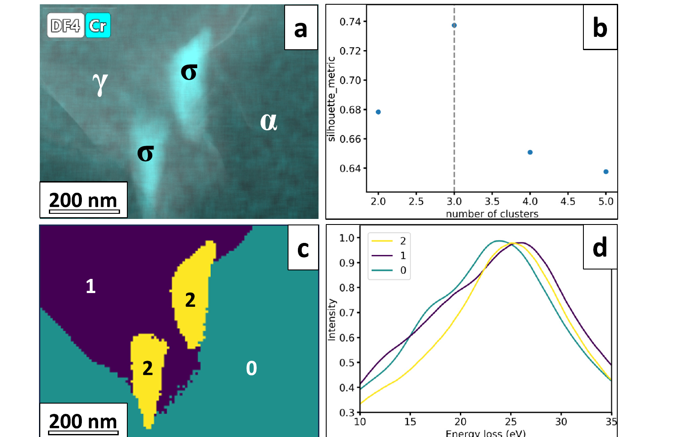
Outcome. Recovered phases: ferrite (α), austenite (γ), and σ-phase precipitates. Phase map agrees with co-acquired EDS, HAADF, and electron diffraction. Runtime: K-means ≈ 30 s vs ≈ 10 min for the same dataset using pixel-by-pixel Drude-model plasmon fitting — same answer, \(\sim 20\times\) faster, no per-fit hand-tuning.
27. GMM Phase Maps and Mixed Pixels
Soft assignment is the right tool here
- A pixel sitting on a phase boundary contains a mixture of two materials.
- K-means forces one cluster ID; GMM gives the responsibility vector \(\gamma_{i\cdot}\).
- \(\max_k \gamma_{ik}\): maximum-responsibility map (looks like K-means).
- \(\gamma_{i\cdot}\) vector: composition map per pixel.
Visualisation
- Map 1: argmax responsibility — same as K-means, sharp boundaries.
- Map 2: per-cluster responsibility heatmap — shows boundary smearing, mixed regions.
- Map 3: entropy of \(\gamma_{i\cdot}\) — uncertainty map; high near phase boundaries and at sub-pixel features.
28. Spectral Unmixing as Constrained Clustering
Linear mixing model
\[\mathbf{s}_i \approx \sum_{k=1}^{K} a_{ik}\, \mathbf{m}_k, \quad a_{ik} \geq 0,\ \sum_k a_{ik} = 1\]
- \(\mathbf{m}_k\): endmember spectrum (fixed or learned).
- \(a_{ik}\): abundance of endmember \(k\) at pixel \(i\).
- Constraints: non-negative, sum-to-one — physically interpretable mixture.
Relation to GMM
- GMM: \(\gamma_{i\cdot}\) are unconstrained Gaussian responsibilities.
- Unmixing: \(a_{i\cdot}\) are constrained to lie on the simplex.
- Algorithms: NMF (non-negative matrix factorisation), VCA (vertex component analysis), constrained learned encoders (Unit 9).
29. Worked Example: Deep-Mantle Assemblage
Setup and Challenge (Chen et al. 2024)
- Sample: diamond-anvil-cell synthesis of lower-mantle phases.
- Phases: bridgmanite (Brg), ferropericlase (Fp), Ca-perovskite (CaPv).
- Doped with trace Nd, Sm, U (\(\sim 500\) ppm).
- Problem: Phases overlap spectrally (shared lines) and spatially (sub-pixel). STEM-EDXS is too noisy per pixel for trace detection.
- Solution: NMF (HyperSpy) → 3 components → FCLS-LSMA refinement.
- Headline result: Trace Sm in Fp detected down to \(\sim 65\) ppm.
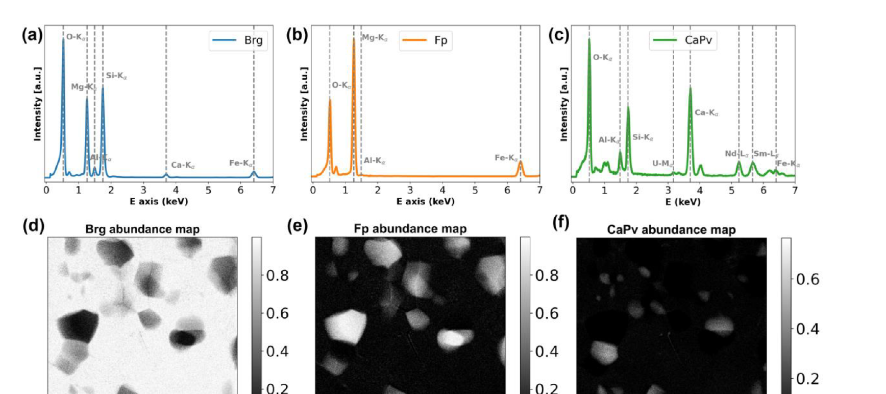
§D · Convolutional Autoencoders for Micrographs
30. From Clustering to Representation Learning
The shift in §D
- §A–C: partition the data into discrete groups.
- §D: compress the data into a continuous low-dimensional representation.
- Same goal — reveal structure without labels — different geometry.
Why a continuous representation is sometimes the right tool
- Microstructures vary smoothly along processing axes (strain, anneal time, dose).
- A discrete cluster ID can’t represent that.
- A 2- to 32-D continuous bottleneck \(z\) can.
31. Autoencoder Objective
Definition
\[\min_\theta \ \mathbb{E}_{x \sim \mathcal{D}}\, \|x - g_\theta(f_\theta(x))\|_2^2\]
- \(f_\theta : \mathbb{R}^{D} \to \mathbb{R}^{d}\) — encoder, \(d \ll D\).
- \(g_\theta : \mathbb{R}^{d} \to \mathbb{R}^{D}\) — decoder.
- \(z = f_\theta(x)\) — bottleneck / latent code.
- \(\hat{x} = g_\theta(z)\) — reconstruction.
The constraint that does the work
- \(d \ll D\): forces the network to compress.
- The AE cannot learn the identity unless \(d = D\).
- The features it must keep are those most useful for reconstruction.
- That utility is what makes \(z\) a useful representation (Goodfellow et al. 2016).
32. Convolutional AE Architecture
Encoder = Unit 4 conv blocks
- Stack of
Conv2d+ activation + downsampling (pool or stride-2). - Spatial dimensions shrink: \(128\!\times\!128 \to 64 \to 32 \to 16 \to 8\).
- Channel count grows: \(1 \to 16 \to 32 \to 64 \to 128\).
- Final spatial flatten + linear \(\to z \in \mathbb{R}^d\).
Decoder = mirror image
- Linear \(z \to\) low-resolution feature map.
- Stack of upsample +
Conv2d(orConvTranspose2d). - Spatial dimensions grow back: \(8 \to 16 \to 32 \to 64 \to 128\).
- Final
Conv2d→ 1 channel reconstruction \(\hat{x}\).
Total parameter count: typically \(10^5\)–\(10^7\) for \(128 \times 128\) micrographs — a small CNN by 2024 standards.
33. Bottleneck Dimension as Inductive Bias
Small \(d\)
- Strong compression.
- AE retains only the most “globally important” features (rough morphology, dominant phase).
- Reconstruction blurs fine detail.
- \(z\)-space is interpretable and visualisable.
Large \(d\) (close to \(D\))
- Weak constraint.
- AE approaches the identity function.
- Reconstruction is sharp but \(z\) is uninformative.
- Use case: only when reconstruction quality matters and representation does not.
Practical sweet spot for \(128 \times 128\) micrographs: \(d \in [16, 64]\). For 2-D scatter visualisation: \(d = 2\) or \(d = 3\) as a secondary head trained jointly.
34. Training a Conv-AE
Recipe
- Loss: per-pixel MSE (Gaussian noise) or per-pixel Poisson NLL (count data).
- Optimiser: Adam, LR \(10^{-3}\) with cosine decay.
- Batch size: 64–256 depending on GPU memory.
- Normalise input to zero mean / unit variance per dataset.
- Early stop on held-out reconstruction loss.
When to stop
- Plateau on validation loss for \(\sim 10\) epochs.
- Or hit a target reconstruction quality (PSNR / SSIM threshold).
- Don’t overtrain: identity function looms.
- Save the encoder \(f_\theta\); the decoder \(g_\theta\) is often discarded after training (kept only for denoising / compression).
35. Application 2 — Compression for Archival
The problem
- 4D-STEM dataset: \(\sim 50\)–\(500\) GB raw.
- Archival constraint: lab disk space, network bandwidth, long-term storage.
- Lossless compression (gzip): \(\sim 2\times\). Not enough.
- Lossy classical compression (JPEG): destroys diffraction-pattern structure.
The AE solution
- Train AE on a subset of the data.
- Save only the bottleneck activations \(z_i\) instead of the raw images.
- Compression ratio: \(D / d \sim 100\)–\(1000\times\).
- Reconstruct on demand for downstream analysis.
- Distortion is bounded by the AE’s training reconstruction quality.
36. Application 3 — AE Features for Downstream Regression
Case study — Frieden Templeton et al. 2024 (Frieden Templeton et al. 2024)
- LPBF Ti-6Al-4V parts, optical micrographs of polished cross-sections.
- Target: four-point-bend fatigue life (cycles to failure).
- Pipeline: VAE with a regression head — micrograph \(\to\) latent \(z\) \(\to\) predicted fatigue life.
- Latent features pick out physically plausible porosity descriptors: pore clusters, pores near edges, jagged pore morphologies.
- Second demo: binder-jet WC-Co micrographs \(\to\) transverse rupture strength.
The general recipe
- Train AE/VAE on all unlabeled micrographs.
- Freeze (or jointly train a head on) the encoder.
- Fit a small regressor on \((z_i, y_i)\) for the few labelled samples.
- Result: useful property predictor with \(10^2\) labels — because the AE already learned the features.
Generalises to any image-to-scalar property task where labels are expensive but unlabeled images are cheap.
37. VAE-Regression Architecture — Frieden Templeton 2024
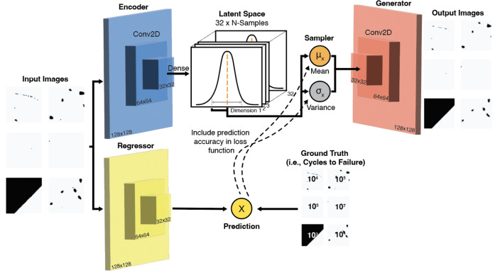
What’s new vs vanilla AE
- Encoder is variational (\(\mu_z\), \(\sigma_z\)) — smooth, regularised latent.
- A small regression head branches off the encoder and predicts cycles-to-failure.
- Loss = ELBO + prediction loss → latent is jointly shaped by reconstruction and property.
- Binarised pore masks (\(128\times 128\)) are the inputs — the AE compresses porosity geometry.
38. Latent Edits Recover Physical Porosity Descriptors
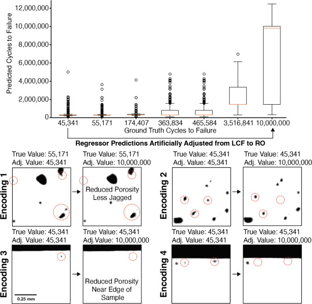
Two results in one figure
- Accuracy: the regressor separates LCF (\(\sim 10^4\) cycles) from run-out (\(10^7\)) cleanly.
- Interpretability: decoding edited latents reveals what the network thinks “long life” looks like.
What pops out is exactly what materials science predicts:
- fewer pores
- less jagged pore boundaries
- pores not near the sample edge
39. Spatial Fatigue-Life Prediction Across the Cross-Section
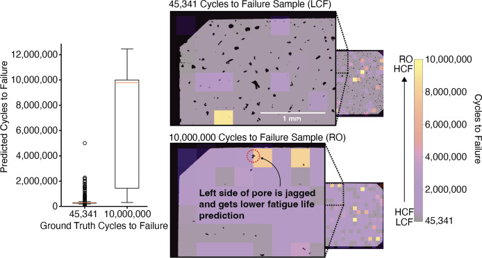
Why this is the deployment slide
- Train on patches → apply per-patch to a full cross-section → get a spatial fatigue-life map for free.
- The map highlights the worst local region — that’s the fatigue-driver.
- Same recipe as AE-based anomaly localisation we’ll meet in §E.
Operational use: a non-destructive proxy for go/no-go decisions on AM parts from a single polished cross-section.
§E · AE-Based Anomaly Detection
40. The Anomaly-Detection Setup
The premise
- Train an AE only on nominal data — frames / signals known to be “good”.
- The AE learns to compress nominal data accurately.
- Anomalous data — by definition not in the training distribution — cannot be compressed accurately.
- Reconstruction error \(\to\) anomaly score.
Operational form
- Score: \(a(x) = \|x - g_\theta(f_\theta(x))\|^2\).
- High \(a\): anomaly.
- Threshold \(\tau\): from nominal validation error distribution (not from anomaly examples).
- Flag if \(a(x) > \tau\).
41. Anomaly Score: Frame-Level vs Pixel-Level
Frame-level
\[a(x) = \tfrac{1}{HW} \sum_{i,j} (x_{ij} - \hat{x}_{ij})^2\]
- One scalar per frame.
- Use case: “is this frame anomalous?”
- Drives frame-level decisions (keep / flag / reject).
Pixel-level (residual map)
\[r_{ij}(x) = (x_{ij} - \hat{x}_{ij})^2\]
- A 2-D image, same shape as input.
- Use case: “where in this frame is the anomaly?”
- Drives spatial decisions (which region to re-image, ROI selection).
42. Threshold Selection from Nominal Validation
The procedure
- Hold out a nominal validation set \(\mathcal{V}_{\rm nom}\) (no anomalies).
- Compute \(\{a(x) : x \in \mathcal{V}_{\rm nom}\}\).
- Pick a high quantile (95%, 99%, 99.9%) as \(\tau\).
- Deploy: flag frames with \(a > \tau\).
The cardinal rule
- Never pick \(\tau\) from anomaly examples.
- That would be supervised threshold tuning ⇒ leakage of anomaly labels into the detector.
- The threshold must be purely a property of nominal data.
- Anomalies are evaluated after deployment as a sanity check.
43. Case Study — Melt-Pool Monitoring (LPBF, 1/3)
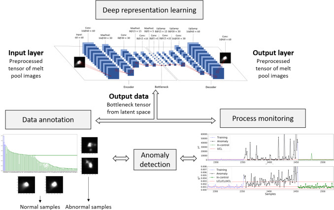
The problem
- Laser powder-bed fusion: laser fuses metal powder layer-by-layer; melt-pool dynamics drive porosity, surface quality, microstructure.
- Co-axial high-speed camera at the NIST AMMT testbed: \(\sim\) 3000 melt-pool images / layer / part, hundreds of layers per build.
- No per-frame labels — porosity ground truth comes from post-mortem CT, aggregated over volumes.
The recipe (one sentence)
Use an unsupervised AE to learn melt-pool features, then cluster the features to discover anomaly types, then chart the features to flag anomalies in real time.
44. Case Study — Melt-Pool Monitoring (LPBF, 2/3)
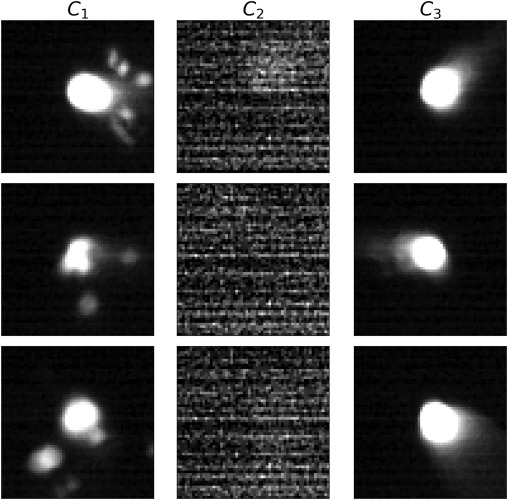
The interpretability headline
- The AE saw no labels.
- The dendrogram cut at cophenetic distance \(0.70\) separates 3 distinct populations.
- Sample images inside each cluster confirm the populations are physically meaningful:
| Cluster | What it is | Frames |
|---|---|---|
| \(C_1\) | splash / eccentric anomalies | 97 |
| \(C_2\) | sensor noise (camera glitch) | 530 |
| \(C_3\) | clean melt pool (normal) | 3138 |
Therefore: the latent has learned a taxonomy of process states without supervision.
45. Aside — Hotelling’s \(T^2\) as a Multivariate Anomaly Score
The score
\[ T^2(\mathbf{z}) \;=\; (\mathbf{z}-\boldsymbol{\mu})^\top \,\boldsymbol{\Sigma}^{-1}\, (\mathbf{z}-\boldsymbol{\mu}) \]
- \(\mathbf{z} \in \mathbb{R}^d\): feature vector (here, the 200-d AE bottleneck).
- \(\boldsymbol{\mu},\,\boldsymbol{\Sigma}\): estimated from the in-control samples only.
- One scalar per frame — the squared Mahalanobis distance from the in-control mean.
\(T^2\) is the multivariate generalisation of the squared \(z\)-score.
From score to alarm
- Under Gaussian in-control: \(T^2 \sim \chi^2_d\) asymptotically.
- In practice the latent isn’t Gaussian → estimate the in-control distribution of \(T^2\) non-parametrically (kernel density).
- Upper control limit (UCL): \((1-\alpha)\) quantile of that distribution.
- Online: compute \(T^2(\mathbf{z}_t)\) per new frame → flag if \(T^2 > \mathrm{UCL}\).
Geometry. \(T^2 = c\) traces an ellipsoid aligned to the in-control covariance — anisotropic distance, not a sphere.
46. Case Study — Melt-Pool Monitoring (LPBF, 3/3)
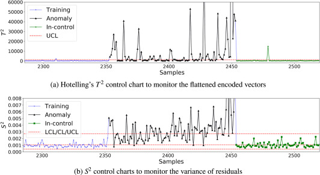
Two charts, two failure modes
- \(T^2\) on the bottleneck vector \(\to\) catches features the AE learned (shape, splash).
- \(S^2\) on the reconstruction residual \(\to\) catches images the AE can’t represent at all (sensor glitches, novel anomalies).
Bottom-line numbers
| Accuracy | Sensitivity | F\(_1\) | |
|---|---|---|---|
| Hand-crafted (NBEM) | 89.2% | 17.9% | 27.3% |
| CAE + \(T^2\)/\(S^2\) | 95.4% | 82.1% | 82.6% |
Deep features triple the F\(_1\) — and it is all because sensitivity went from 18% to 82%.
47. Failure Mode 1 — Training Set Too Narrow
The trap
- AE trained on a single sample, single magnification, single brightness.
- Deployed to slightly different conditions (a sample with a rare-but-real microstructure).
- AE flags the rare-but-real frames as anomalies.
- High false-positive rate \(\to\) alert fatigue \(\to\) operators silence the system.
Mitigation
- Train on broad nominal data: many sessions, samples, magnifications, brightnesses.
- Augment: brightness/contrast jitter, small rotations, additive Gaussian noise.
- Periodically re-train the AE on a sliding window of recent nominal data.
- Track false-positive rate per session; alert on its drift.
§F · Wrap-Up
48. Method-vs-Application Matrix
| Method \ Application | Phase ID | Denoising | Anomaly | Compression | Downstream regression |
|---|---|---|---|---|---|
| §A Classical clustering (K-means / GMM) | \(\checkmark\checkmark\) | \(\checkmark\) | |||
| §B CNN-embedding clustering | \(\checkmark\checkmark\) | \(\checkmark\) | \(\checkmark\) | ||
| §C Hyperspectral clustering | \(\checkmark\checkmark\) | ||||
| §D Conv-AE | \(\checkmark\) | \(\checkmark\checkmark\) | \(\checkmark\checkmark\) | \(\checkmark\checkmark\) | |
| §E AE anomaly detection | \(\checkmark\checkmark\) |
49. Exercise + Reading Assignment
Reading for next week
- Sandfeld et al. (2024), Ch 11 (clustering for materials data) and Ch 19 sections on AE / microscopy case studies.
- Goodfellow et al. (2016), Ch 14 (autoencoders) — sections 14.1–14.3 are sufficient.
- Bishop (2006) §9.1–9.2 if K-means / EM still feel shaky.
- Optional: Neuer et al. (2024) Ch 5 for an engineering perspective on unsupervised methods.
Next week (Unit 6): transfer learning and data scarcity — the supervised counterpart to today’s unsupervised toolkit.
Continue
- ← Previous: Unit 04 — From classical microstructure metrics to learned representations
- → Next: Unit 06 — Data scarcity & transfer learning
- All courses
Arthur, David, and Sergei Vassilvitskii. 2007. “K-Means++: The Advantages of Careful Seeding.” Proceedings of the Eighteenth Annual ACM-SIAM Symposium on Discrete Algorithms, 1027–35.
Bishop, Christopher M. 2006. Pattern Recognition and Machine Learning. Springer.
Castro Riglos, M. V., L. Lajaunie, et al. 2024. “Combining Low-Loss EELS Experiments with Machine Learning-Based Algorithms to Automate the Phases Separation Imaging in Industrial Duplex Stainless Steels.” Materials Characterization 211: 113924. https://doi.org/10.1016/j.matchar.2024.113924.
Chen, Hui, Farhang Nabiei, James Badro, Duncan T. L. Alexander, and Cécile Hébert. 2024. “Non-Negative Matrix Factorization-Aided Phase Unmixing and Trace Element Quantification of STEM-EDXS Data.” Ultramicroscopy, ahead of print. https://doi.org/10.1016/j.ultramic.2024.113981.
Fathizadan, Sepehr, Feng Ju, and Yan Lu. 2021. “Deep Representation Learning for Process Variation Management in Laser Powder Bed Fusion.” Additive Manufacturing 42: 101961. https://doi.org/10.1016/j.addma.2021.101961.
Frieden Templeton, William et al. 2024. “Expediting Structure–Property Analyses Using Variational Autoencoders with Regression.” Computational Materials Science 242: 113056.
Goodfellow, Ian, Yoshua Bengio, and Aaron Courville. 2016. Deep Learning. MIT Press.
Khatavkar, Nikhil, Sheetal Swetlana, and Abhishek Kumar Singh. 2020. “Accelerated Prediction of Vickers Hardness of Co- and Ni-Based Superalloys from Microstructure and Composition Using Advanced Image Processing Techniques and Machine Learning.” Acta Materialia 196: 295–303.
Lee, Daniel D., and H. Sebastian Seung. 2001. “Algorithms for Non-Negative Matrix Factorization.” Advances in Neural Information Processing Systems 13: 556–62.
Liao et al. 2025. “Mapping Microstructure to Mechanical Property by Disentangling Strengthening Mechanism with Deep Learning.” Acta Materialia 301: 121608.
Murphy, Kevin P. 2012. Machine Learning: A Probabilistic Perspective. MIT Press.
Na, Gyoung S., and Hyunju Chang. 2022. “A Public Database of Thermoelectric Materials and System-Identified Material Representation for Data-Driven Discovery.” Npj Computational Materials 8 (1): 214. https://doi.org/10.1038/s41524-022-00897-2.
Neuer, Michael et al. 2024. Machine Learning for Engineers: Introduction to Physics-Informed, Explainable Learning Methods for AI in Engineering Applications. Springer Nature.
Odena, Augustus, Vincent Dumoulin, and Chris Olah. 2016. “Deconvolution and Checkerboard Artifacts.” Distill 1 (10): e3.
Pelz, Philipp M., Sinéad M. Griffin, Scott Stonemeyer, et al. 2023. “Solving Complex Nanostructures with Ptychographic Atomic Electron Tomography.” Nature Communications 14 (11): 7906. https://doi.org/10.1038/s41467-023-43634-z.
Romanov, Andrey, Min Gee Cho, Mary Cooper Scott, and Philipp Pelz. 2024. “Multi-Slice Electron Ptychographic Tomography for Three-Dimensional Phase-Contrast Microscopy Beyond the Depth of Focus Limits.” Journal of Physics: Materials 8 (1): 015005. https://doi.org/10.1088/2515-7639/ad9ad2.
Sandfeld, Stefan et al. 2024. Materials Data Science. Springer.
Song, Kechen, and Yunhui Yan. 2013. “A Noise Robust Method Based on Completed Local Binary Patterns for Hot-Rolled Steel Strip Surface Defects.” Applied Surface Science 285: 858–64.
Teurtrie, Adrien, Nathanaël Perraudin, Thomas Holvoet, et al. 2024. “From STEM-EDXS Data to Phase Separation and Quantification Using Physics-Guided NMF.” arXiv Preprint arXiv:2404.17496. https://arxiv.org/abs/2404.17496.
Ward, Logan, Ankit Agrawal, Alok Choudhary, and Christopher Wolverton. 2016. “A General-Purpose Machine Learning Framework for Predicting Properties of Inorganic Materials.” Npj Computational Materials 2 (1): 16028. https://doi.org/10.1038/npjcompumats.2016.28.

© Philipp Pelz - Machine Learning in Materials Processing & Characterization